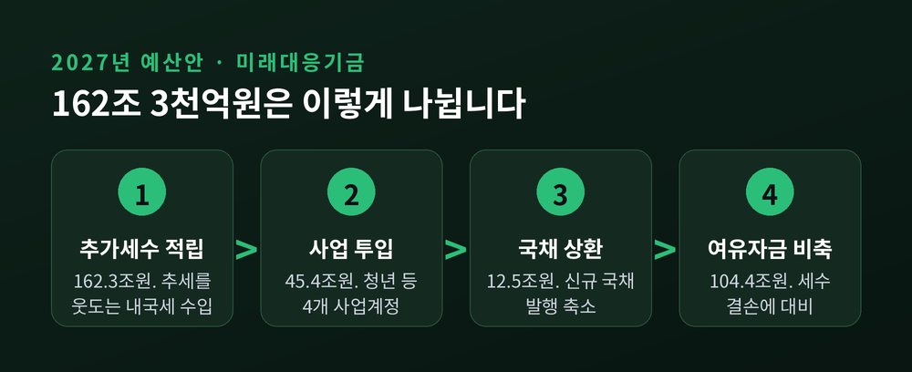
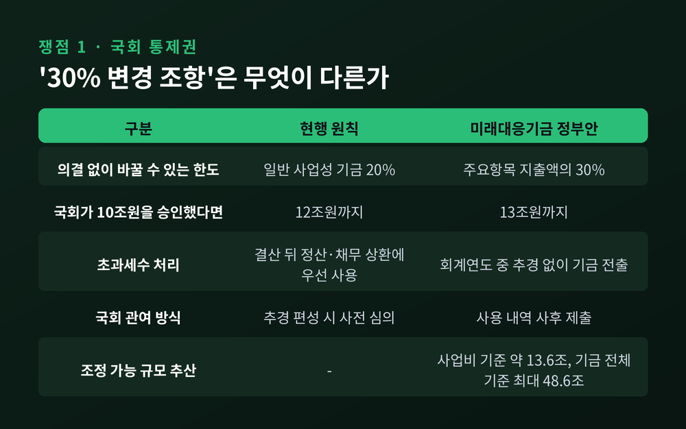
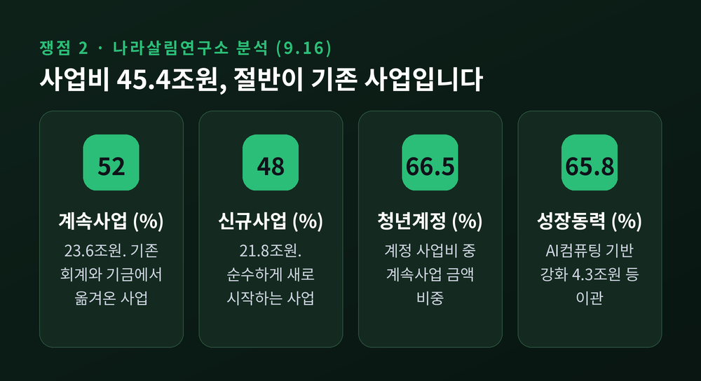
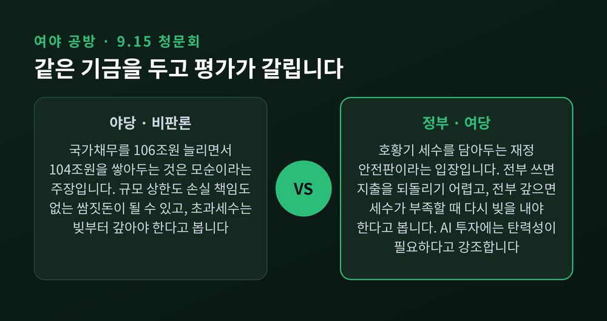
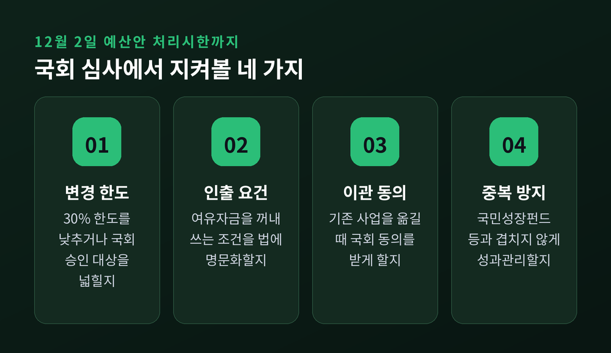

추석 연휴가 시작됐지만 국회 재정경제기획위원회의 숙제는 그대로 남아 있습니다. 2027년 예산안과 함께 제출된 162조3000억원 규모의 미래대응기금입니다. 이번 글에서는 이 기금이 무엇이고, 왜 여야와 전문가들이 한목소리로 '통제 장치'를 묻고 있는지 정리해 보겠습니다.
세 줄 요약
- 정부는 반도체 호황으로 늘어난 세수를 쌓아두는 미래대응기금 162조3000억원을 새로 만들고, 내년에 45조4000억원을 사업에 쓰고 104조4000억원은 비축하겠다고 했습니다.
- 국회는 국회 의결 없이 주요 지출을 최대 30%까지 바꿀 수 있는 조항, 그리고 사업비의 절반가량이 기존 사업을 옮겨 담은 것이라는 분석을 문제 삼고 있습니다.
- 국민성장펀드와의 중복, "빚부터 갚으라"는 확장재정 비판도 겹쳐 있어, 12월 2일 예산안 처리시한까지 기금의 설계가 크게 손질될 가능성이 있습니다.
무슨 일인가 — 820조 예산안 속 '두 번째 지갑'
정부가 제출한 2027년 예산안의 총지출은 820조9000억원입니다. 올해 본예산보다 93조원, 12.8% 늘었습니다. 2009년 금융위기 때의 10.6%를 넘어서는 역대 최대 증가율입니다.
이 예산안에서 가장 눈에 띄는 대목이 미래대응기금입니다. 기금 수입은 162조3000억원으로 잡혔습니다.
재원의 핵심은 '추가세수'입니다. 다음 해 내국세 세입예산에서 최근 10년 증가 추세로 계산한 기준액을 뺀 금액입니다. 쉽게 말해 추세를 웃도는 몫을 따로 떼어 두는 방식입니다. 여기에 원래 지방교부세·교육교부금으로 자동 배분되던 몫도 기금 재원으로 돌렸습니다.
기금은 총괄계정 하나와 사업계정 넷으로 나뉩니다. 총괄계정에 109조4000억원, 청년 13조3000억원, 성장동력 14조2000억원, 지방 15조3000억원, 교육·인재 10조1000억원입니다.
첫해에 실제 사업에 들어가는 돈은 45조4000억원입니다. 12조5000억원은 국채 상환에 쓰여 신규 발행을 줄입니다. 남는 104조4000억원은 여유자금으로 쌓아둡니다. 9월 세입 재추계에서 초과세수가 30조~50조원 나오면 기금이 200조원 안팎까지 커질 수 있다는 관측도 있습니다.

왜 중요한가 — 세수 호황을 '저수지'에 담겠다는 실험
정부 설명은 분명합니다. 반도체처럼 부침이 큰 산업에서 들어온 세금을 한 번에 써버리지 말고, 저수지처럼 담아두자는 것입니다.
기획예산처 김정애 예산정책과장은 9월 11일 토론회에서 특정 산업 의존으로 세수 변동성이 커진 만큼 이를 흡수할 재정안정화 장치가 필요하다고 설명했습니다. 세금이 많이 걷히면 지출을 늘리고, 덜 걷히면 줄이는 방식이 오히려 경기 변동을 키운다는 문제의식입니다.
이형일 부총리 겸 재정경제부 장관 후보자도 9월 15일 청문회에서 같은 논리를 폈습니다. 완충 장치 없이 초과세수를 전부 쓰면 나중에 지출을 줄이기 어렵고, 전부 국채 상환에 쓰면 국채시장 유동성이 급격히 줄 수 있다는 것입니다.
예전에는 세수가 넘치면 추경으로 쓰고, 모자라면 빚을 내는 식이었습니다. 이제는 넘칠 때 담고 모자랄 때 꺼내 쓰겠다는 구상입니다. 방향 자체에는 비판론자들도 대체로 공감합니다. 문제는 설계입니다.
쟁점 ① — 국회 의결 없이 30%까지 바꿀 수 있다
가장 뜨거운 쟁점은 국가재정법 개정안의 '30% 조항'입니다. 미래대응기금의 주요항목 지출액을 30% 이하 범위에서 국회 재심의 없이 변경할 수 있게 했습니다.
예를 들어 국회가 10조원으로 승인한 기금 사업을 추가 의결 없이 13조원까지 늘릴 수 있다는 뜻입니다. 금융성 기금이 아닌 일반 사업성 기금의 변경 한도는 20%입니다. 그보다 정부 재량이 넓습니다.
어느 금액을 기준으로 삼느냐에 따라 파장의 크기도 달라집니다. 첫해 사업비 45조4000억원을 기준으로 하면 약 13조6000억원, 기금 전체를 기준으로 하면 최대 48조6000억원이 국회 사전 심의 없이 조정될 수 있다는 계산이 함께 나옵니다.
초과세수도 쟁점입니다. 정부안은 회계연도 중 생긴 초과세수를 추경 없이 기금으로 옮기고, 사용 내역은 국회에 사후에 내도록 했습니다. 현행법은 결산 뒤 남은 돈을 지방 정산, 공적자금 상환, 국채 상환 순으로 쓰게 돼 있습니다. 이 순서를 비켜 가면 나랏빚을 갚을 재원이 줄어든다는 지적이 나옵니다.
정부와 청와대의 반론도 있습니다. 청와대 관계자는 8월 26일 "정부 쌈짓돈이 될 수 없다"고 했습니다. 기금운용계획은 국회 심사를 받고, 변경도 국회에 보고한다는 것입니다. 최신 GPU 값이 뛰면 예산에 적힌 단가로는 살 수 없으니, 추경보다 기금 계획 변경이 효율적이라는 예도 들었습니다.

쟁점 ② — 새 기금에 담긴 '헌 사업'
두 번째 쟁점은 사업의 구성입니다. 미래를 위해 만든 기금인데, 내용물의 상당 부분이 이미 하던 사업이라는 비판입니다.
나라살림연구소가 9월 16일 낸 보고서에 따르면 사업비 45조3625억원 가운데 계속사업 이관분이 23조5920억원, 52%입니다. 순수 신규사업은 21조7705억원에 그쳤습니다. 청년계정은 계속사업 비중이 66.5%, 성장동력계정은 65.8%입니다. 지방계정만 신규 비중이 88.6%로 높았습니다.
대표적인 이관 사업은 과기정통부의 'AI컴퓨팅 자원 활용 기반 강화'(4조2752억원), 복지부의 아동기본수당(2조9272억원), 금융위의 청년미래적금(1조7011억원)입니다.
집계는 기관마다 조금씩 다릅니다. 국민의힘 윤영석 의원실은 이관 사업을 55개, 24조1824억원으로 봤고, 뉴스핌은 61개, 18조3000억원으로 추정했습니다. 어느 쪽이든 사업비의 40~50%대가 기존 사업이라는 점은 같습니다.
윤 의원실은 이 가운데 16개 사업, 약 13조원이 집행 부진이나 이월·불용을 지적받았던 사업이라고 밝혔습니다. 윤 의원은 이를 "부실사업의 간판갈이"라고 표현했습니다.
기획예산처의 입장은 다릅니다. 새 기금을 신규사업으로만 채우는 것은 바람직하지 않고, 목적이 비슷한 사업을 한데 묶어야 중복 점검과 집행 효율이 좋아진다는 설명입니다. 다만 이상민 나라살림연구소 수석연구위원은 상시사업을 추가세수에 기대는 기금으로 옮기면, 세수가 줄 때 다시 일반회계로 되돌려야 하는 문제가 생긴다고 짚었습니다.

쟁점 ③ — 국민성장펀드와 겹치는 AI·반도체 투자
성장동력계정은 AI와 첨단전략산업, 대형 국가 프로젝트를 지원합니다. 그런데 정부는 이미 국민성장펀드로 향후 5년간 150조원 이상을 첨단전략산업에 공급하겠다고 밝힌 상태입니다.
성격은 다릅니다. 국민성장펀드는 정책금융이고, 미래대응기금은 재정기금입니다. 그러나 같은 기업이나 사업에 재정 보조와 출자·융자가 이중으로 들어갈 가능성을 배제하기 어렵다는 게 전문가들의 시각입니다. 모태펀드, 과학기술진흥기금, 정보통신진흥기금도 비슷한 영역에서 돈을 대고 있습니다.
김학수 KDI 선임연구위원은 기금 사업이 국민성장펀드·국부펀드와 유사하고 중복된다고 지적했습니다. 그는 총괄계정 하나만 남겨 돈을 관리하고, 필요한 재원은 일반·특별회계로 넘기는 방식이면 충분하다는 대안도 내놓았습니다.
AI 투자의 속도가 중요하다는 정부 논리에도 일리는 있습니다. 반도체 호황이 만든 기회를 성장 투자로 연결하지 못하면 세수 호황은 한때의 착시로 끝날 수 있기 때문입니다.
배경 — 빚은 106조 늘고, 비상금은 104조 쌓는다
확장재정 논쟁도 기금 논란과 맞물려 있습니다. 내년 말 국가채무는 1519조8000억원으로 처음 1500조원을 넘을 전망입니다. 1년 새 약 106조원이 늘어납니다.
국민의힘은 이 대목을 파고듭니다. 이종욱 의원은 청문회에서 "대만은 빚부터 갚았다"며, 채무를 106조원 늘리면서 여유재원 104조원을 쥐고 있으려는 이유를 따졌습니다. 김상훈 의원은 규모 상한도, 손실 책임도 없는 "견제 없는 쌈짓돈"이라고 비판했습니다. 당은 30% 조항뿐 아니라 기금 신설 자체에 반대하는 입장입니다.
더불어민주당은 '재정 안전판'이라는 논리로 맞섭니다. 안도걸 의원은 초과세수로 빚을 전부 갚으면 세수가 부족할 때 다시 빚을 내야 한다며, 일부는 상환하고 나머지는 적립하는 것이 현명하다고 했습니다. 오기형 의원은 호황기 세수가 추경으로 흘러가 경기를 과열시키는 것을 막는 "필요한 제도적 진화"라고 평가했습니다.
지출의 무게중심도 기금 쪽으로 옮겨갔습니다. 총지출 증가액 93조원 가운데 기금 부문 증가분이 69조4000억원, 약 74.6%입니다. 일반·특별회계를 합친 예산 부문은 4.9% 늘어나는 데 그쳤습니다.
국제 신용평가사 피치는 9월 9일 보고서에서 이번 예산안이 재정지표를 개선하겠지만 그 효과는 일시적일 수 있다고 봤습니다. 반도체·AI 수익 사이클이 꺾이면 적자가 다시 커질 수 있다는 경고입니다. 핵심은 일시적인 세수를 성장률을 끌어올리는 투자로 얼마나 연결하느냐라고 짚었습니다.

전망 — 승부처는 '수문을 여는 규칙'
심사는 연휴 뒤 재정경제기획위원회에서 본격화됩니다. 예산안 법정 처리시한은 12월 2일입니다.
흥미로운 점은 여당 쪽에서도 통제 강화안이 나온다는 것입니다. 민주당 싱크탱크인 민주연구원은 연도별 기금운용계획을 예산안과 함께 국회에 내고, 중대한 목적 변경이나 계정 간 자금 이전은 국회 승인을 받게 하자고 제안했습니다. 기존 사업을 기금으로 옮길 때 국회 동의와 재정영향분석을 의무화하는 방안도 담았습니다.
KDI도 비슷한 처방을 냈습니다. 목적 변경은 국회 승인, 부채와 금융자산·운용비용·다년도 성과는 통합 공시, 기금 출연을 위한 차입은 금지하자는 것입니다. 인출 한도를 세수 결손액의 일정 비율로 묶자는 제안도 있었습니다.
이런 흐름을 보면 협상 테이블에 오를 의제는 대략 네 가지로 좁혀집니다.
- 30% 변경 한도를 낮추거나 국회 승인 대상을 넓히는 문제
- 여유자금 인출 요건을 법에 명문화하는 문제
- 기존 사업 이관에 국회 동의를 받게 하는 문제
- 국민성장펀드 등과의 중복을 막는 성과관리 체계
여당 싱크탱크까지 보완 입법을 거론하는 만큼, 기금이 정부안 그대로 통과되기는 쉽지 않아 보입니다. 결국 정부가 원하는 '탄력성'과 국회가 지키려는 '예산 통제권' 사이에서 어느 선에 합의하느냐가 앞으로 기금의 성격을 결정할 것입니다. 경남도와 18개 시·군이 보통교부세가 약 3조4000억원 줄 수 있다며 반발하는 등 지방재정 갈등도 변수로 남아 있습니다.

정리하면 이렇습니다. 호황기 세수를 쌓아둘 장치가 필요하다는 데는 비판적인 전문가들도 대체로 동의합니다. 갈리는 지점은 그 저수지의 수문을 누가, 어떤 절차로 여느냐입니다.
"기금의 크기보다 수문을 여는 규칙이 더 중요하다."
162조원이 미래를 위한 저수지가 될지, 또 하나의 지갑이 될지 묻는다면 — 그 답은 올가을 국회가 쓰는 법 조문 몇 줄에 달려 있다고 생각합니다.
※ 이 글은 정보 제공 목적이며 투자 권유가 아닙니다. 공개된 보도와 정부 발표를 정리한 것으로, 국회 심사 과정에서 기금 규모와 운용 규정은 달라질 수 있습니다. 정책 관련 판단 전에는 최신 공식 자료를 확인하시길 권합니다.